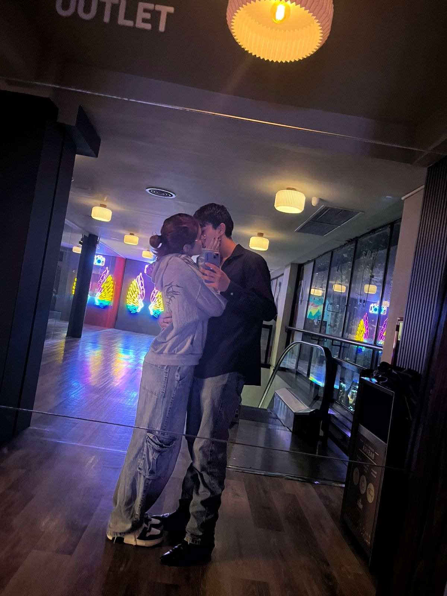
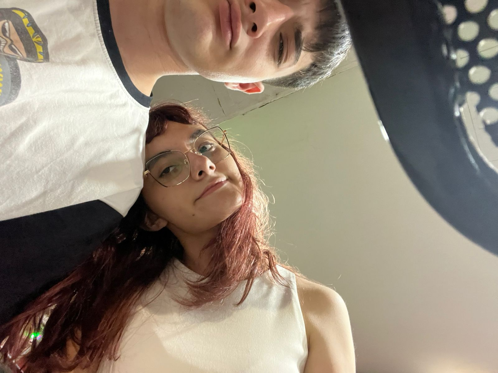
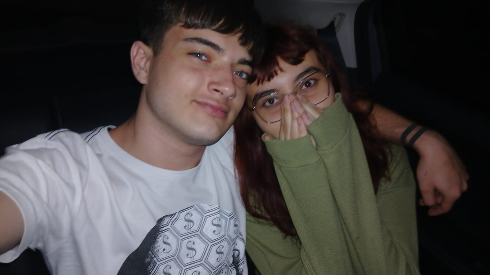
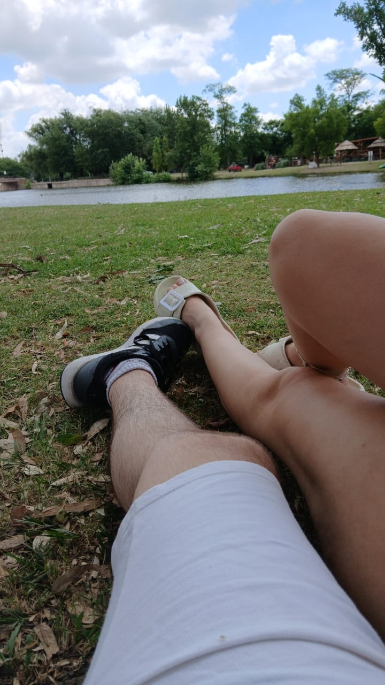
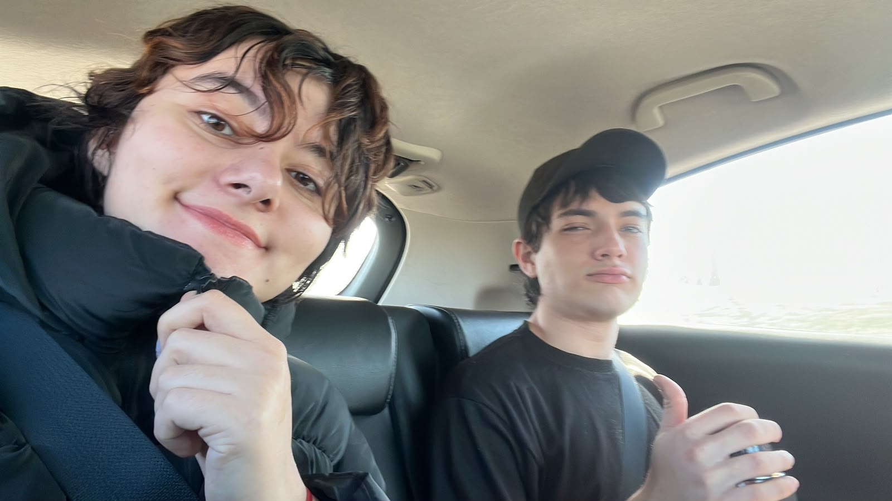
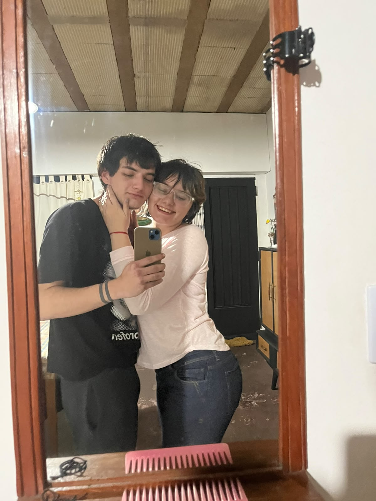

Preparé este pequeño rincón para celebrar nuestros 11 meses.
11 meses de risas, abrazos, conversaciones, aventuras y recuerdos que quiero guardar para siempre.
♡
mi vida,
te amo tanto que es dificil de expresar pero todo con vos es mas hermoso, andar en auto, cocinar, pasear, ver una peli, incluso lo mas simple como tomar mates o estar acostados en silencio. hasta los momentos malos se vuelven algo sin importancia si estas vos, no se siquiera como lo haces pero tenes esa magia de devolverme a la vida. desde esa noche en la que no sabias donde meterte de la verguenza porque aparecio tu vieja hasta ahora me hiciste increiblemente feliz, espero durar años y años a tu lado pq sos la mujer mas hermosa que conoci en mi vida, todos esos detalles tuyos, esa magia que tenes es simplemente increible, te amo demasiado mi vida, nunca lo olvides ni dejes que ese corazon deje de sentir ni que esa sonrisa deje de brillar, porque es lo que me da vida. te amo con todo mi corazon preciosa, gracias por ser esa mujer con la que siempre soñe.
Gracias por todos los momentos que compartimos, por las risas, por las charlas y por hacer que tantos días normales se conviertan en recuerdos especiales.
Estos 11 meses son solamente una parte de todo lo que espero que podamos vivir juntos. Quiero seguir llenando esta página de fotos, aventuras y momentos que algún día vamos a mirar y recordar con una sonrisa.
Felices 11 meses, mi amor. Te amo muchisimo. ♡






Quiero que dentro de mucho tiempo podamos volver a esta página y agregar muchos más recuerdos.
11 meses ♡ y contando...
anto ♡ titi